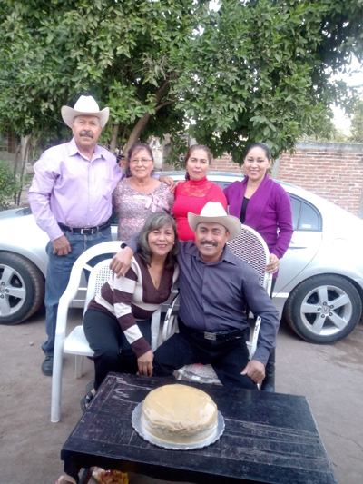

|
 |
 |
 |
|
|
|
|
Familia materna
Algunos de los familiares de mi familia materna. Esta mi mamá y su hermano cuate Eduardo Sánchez, y sus otros hermanos como Valente con sus hijos y nietos, Laura y sus hijos, Rosalba con sus hijas y nietos.
Además faltan otros familiares hermanos y sobrinos de mi mamá, sus hermanos Rene, y Alfredo, y sus sobrinas Claudia y Francisca que están viviendo en Estados Unidos desde hace años.

Foto familiar en el cumpleaños de mi mamá y su hermano el 1 de Enero de 2016
Hermanos y hermanas de mi mamá
Mi mamá y sus hermanos y hermanas que viven en Sinaloa, Valente, Rosalba, Armida, Laura y Eduardo.
Valente vive en Los Mochis, Armida vive en Culiacán, Laura vive en Mocorito, Rosalba y su familia vive en Lomas blancas, Mocorito donde todos llegamos y nos reunimos ahí en vacaciones y fechas especiales.

Foto de mi madre y algunos de sus hermanos, en Mocorito.
Dato curioso
Todas las personas que conocen a mi mama o mi familia materna dicen que me parezco más a ellos, desde chiquito me han apodado “Chino” por mis ojos, algunos me preguntaban si tenía familia oriental, y yo tan seguro les decía que no, porque la mayoría de la familia de mi mamá tienen los ojos así. Incluso le pregunte a mi madre si tenía ella algún abuelos o bisabuelos que fueran orientales pero ella me respondía que no. Mi abuela Consuelo si tiene los ojos como los míos, y la mayoría de mis tíos, pero los ojos de mi abuelo Luis eran azules claros, ojos que me hubiera gustado tener.